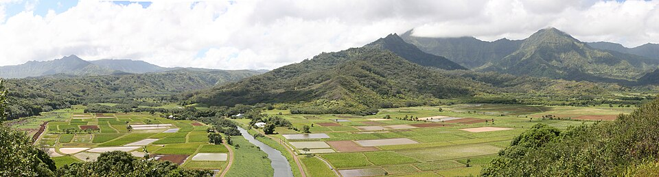

Hanalei
Place: Hanalei, Kauaʻi
Type: Valley / bay / agricultural landscape
Story it tells: A fertile valley whose layered meanings reflect abundance, agriculture, rain, and the shape of the land itself.

Hanalei carries layered meanings, often interpreted as “lei making,” “crescent bay,” or “lei valley,” each reflecting the shape and character of the place. The broad curve of Hanalei Bay suggests the crescent, while the surrounding valley, often filled with rain and rainbows, evokes the image of a lei draped across the land.
For centuries, Hanalei was one of the most productive agricultural regions in Hawaiʻi. Early Hawaiians cultivated extensive loʻi kalo along with bananas, breadfruit, sweet potatoes, yams, and coconuts. The valley’s abundant water and fertile soil supported dense populations and allowed communities to thrive through both farming and marine resources gathered from Hanalei Bay.
During the 1800s, Hanalei became an important agricultural center within the growing global economy. Farmers cultivated rice, coffee, tobacco, sugarcane, citrus, pineapples, and many other crops. In the early 20th century, much of the coastal plain was transformed into rice fields worked largely by immigrant communities, including Chinese, Japanese, Filipino, and Portuguese laborers. These communities built homes, schools, mills, churches, and temples throughout the valley, shaping Hanalei’s modern identity.
Hanalei also became closely associated with Hawaiian royalty during the 19th century. Members of the royal family frequently visited the area, including Kamehameha II, Kamehameha III, Kamehameha IV, Queen Emma, and King Kalākaua. Princeville received its name after Prince Albert, the young son of Kamehameha IV and Queen Emma, following one of their visits to the region.
The valley briefly became tied to international politics as well. In 1817, agents connected to the Russian-American Company established forts on Kauaʻi during an attempted alliance with Kaumualiʻi, the ruling chief of Kauaʻi. Though short-lived, the episode remains one of the more unusual chapters in Hawaiʻi’s history.
Today, Hanalei remains defined by the relationship between valley, water, and cultivation. The loʻi kalo fields still shape the landscape, preserving a connection to the agricultural systems that sustained the region for centuries. The name Hanalei continues to reflect both the physical beauty of the place and the way the valley gathers and supports life.